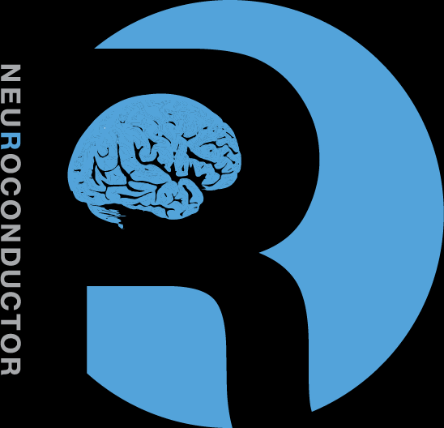

- R
- Matlab
- Python
- SAS / Stata
What language do you teach your (stats) students?
What language do you/your imaging students work in?
- R
- Matlab
- Python
(note SAS/Stata do not exist in this domain)
Are these the same?
- Yes
- No

fMRI MRI/CT
analysis analysis
Lessons Learned using Matlab/SPM
- Matlab and R are very similar (sometimes annoyingly so)
- R had more intuitive (to me) spreadsheet structures
- SPM has great tools, but not all are intuitive
- Batch tools are great
- Checking registration can be a pain

An R Platform for
Medical Imaging Analysis
What really is Neuroconductor?
- A community of developers and users of R packages for imaging
- A website https://neuroconductor.org/.
- with tutorials and help
- A team helping developers and users (John, Adi Gherman, Ciprian Crainiceanu, Brian Caffo)
- A centralized repository of maintained packages
Inspiration
- centralized bioinformatics/genomics packages
- large community/number of packages (> 1300)
- published tutorials and workflows
- additional requirements to CRAN (e.g. packages need vignettes)
Inspiration 
- integrates multiple neuroimaging software
- standardizes the syntax
- provides workflows
- allows the user to take advantage of all of Python
- pandas, scikit-learn, Jupyter notebooks
SPM GUI + courses!

What did R have?

Where do I start???
Goal: Centralize the packages (currently 44)

Why not CRAN
- Data packages
Why not CRAN
- Timings/Checks - need more lenient in some
Why not CRAN
- ANTsR
Workflow for an Analysis
Multiple pieces of software used
- all different syntax

Workflow for an Analysis
- bash

- FSL

- ANTs

- MRIcroGL

- OsiriX

- SPM 12

It's typical to have lots of software choices

From Carp, Joshua. "The secret lives of experiments: methods reporting in the fMRI literature." Neuroimage 63.1 (2012): 289-300.
Goal:
Lower the bar to entry
- all R code
- pipeline tool
- "native" R code
Complete pipeline
- preprocessing and analysis

Neuroconductor Goal:
Detailed tutorials on how to actually perform an analysis

 Neuroconductor Downsides
- More control over the workflow = more work
- Users need external software (versions/installation)
- No control over external software
- if maintainer changes something, not much recourse
- Need the content (buy-in from the community)
R developers involved
- Brandon Whitcher - oro.nifti
- Brian Avants/PICSL - ANTsR
- Jon Clayden - RNifti, divest, RNiftyReg, tractor
- Joerg Polzehl and Karsten Tabelow - fmri, dti
- Gang Chen - developer with AFNI
Neuroconductor Capabilities
| Capabilities | Packages |
|---|---|
| DICOM Images | oro.dicom, dcm2niir, divest, ANTsR |
| NIfTI Images | oro.nifti, RNifti, ANTsR |
| Image Registration | spm12r, fslr, ANTsR, freesurfer |
| Inhomogeneity Correction | spm12r, fslr, ANTsR |
| Brain Extraction | spm12r, fslr, ANTsR, extrantsr |
| Structure Segmentation | spm12r, fslr, ANTsR, extrantsr, freesurfer |
| Intensity Normalization | WhiteStripe, neurobase, ANTsR |
| 3D Smoothing | ANTsR, spm12r, fslr |
| Temporal Filtering | spm12r, fslr, ANTsR |
| Slice-timing correction | spm12r, fslr |
| DTI models | rcamino, oro.dti, fslr |
Git and GitHub
Git is version control system: stores changes of files

- GitHub is an online server of repositories
Distribute packages and install them via
devtools::install_github

Continuous Integration: Travis and Appveyor
- Builds and checks R packages on Windows (Appveyor) and Linux/OS X (Travis CI)
- Works well with GitHub

Neuroconductor Goal:
Provide package checks / rules / stability
- check against other imaging software (e.g. FSL)

Benefits of Neuroconductor:
Allow neuroimaging to use all R has to offer:
- Statistics and Machine Learning
- Versioning and testing
- Reproducibile reports and analyses
- Shiny (web applications)
- Genomics/Imaging analysis in one platform
- Bioconductor
Neuroconductor Downsides
- More control over the workflow = more work
- Users need external software (versions/installation)
- No control over external software
- if maintainer changes something, not much recourse
- Need the content (buy-in from the community)
Potential Neuroconductor Downsides:
Enabling statisticians to do preprocessing also enables imagers to do advanced statistics.
- Why enlist us for only this part?

Training we are providing
Coursera Course: Introduction to Neurohacking In R
https://www.coursera.org/learn/neurohacking/
Short Course: Neuroimaging analysis within R (ISBI, Melbourne, April 2017)
Statistics in Imaging
My Opinions
Without Doing/Knowing the Preprocessing, Analyses Cannot be Trusted
Without Code/Software for Methods, They are just Theory
Future work
- F1000 R packages channel - get publication for workflow
- Removing dupliate packages from CRAN - like Bioconductor
- Docker image for Neuroconductor:
Questions
Crap
- A little history
- I did fMRI analysis for 2 years
- matlab/SPM shop
- not the biggest fan of MATLAB data.frame structures
- also didn't read nii.gz - wtf?
- CT work
- take the MRI tools for CT
- wanted more command line tools
- wanted to implement some things in R
AnalyzeFMRI, oro.nifti, fmri,
- What is it (broad)
- matlab figure
- R only figure
- What is it really?
- a website that ties together all the relevant packages
- tutorials
- an additional set of standards (vignettes) similar to bioconductor
- a centralized repository of copied and maintained packages
- a community of users
- a support for developers (me + adi)
- a website that ties together all the relevant packages
- Why not CRAN
- task view not good enough
- data packages are not going in
- ANTsR
- Actual backend
- what happens when you upload a package
- what is Git, what is GitHub
- what is Travis / Appveyor
- Why should you care
- gives you access to preprocessing
- "Without Doing/Knowing the Preprocessing"
- GIGO
- Genomics does not accept - neither should we
- makes us necessary
Methods work is where a lot of the work is
- It walso allows imagers access to advanced statistical models
- why would they rely on us to do the last step?
- 35 people attended ISBI short course me and Kristin
- data distribution forum
- one of many, but relevant for examples
- Bioconductor
- R markdown
Shiny
- Sellers
- visualization
- papayar
- Bioconductor
- Future work
- F1000 R packages channel - get credit for work
Removing dupliate packages from CRAN - like Bioconductor